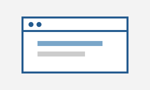
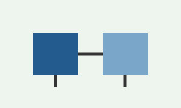

Desarrollo de aplicaciones móviles
Creación de aplicaciones móviles enfocadas en resolver necesidades concretas y facilitar el acceso a herramientas útiles.
Estos son los servicios relacionados con las áreas que estoy aprendiendo durante mi formación académica.
Creación de aplicaciones móviles enfocadas en resolver necesidades concretas y facilitar el acceso a herramientas útiles.

Elaboración de páginas web sencillas, organizadas y adaptadas a la información que se desea presentar.

Diseño de sistemas que apoyen la organización de información, recursos y procesos dentro de una institución.